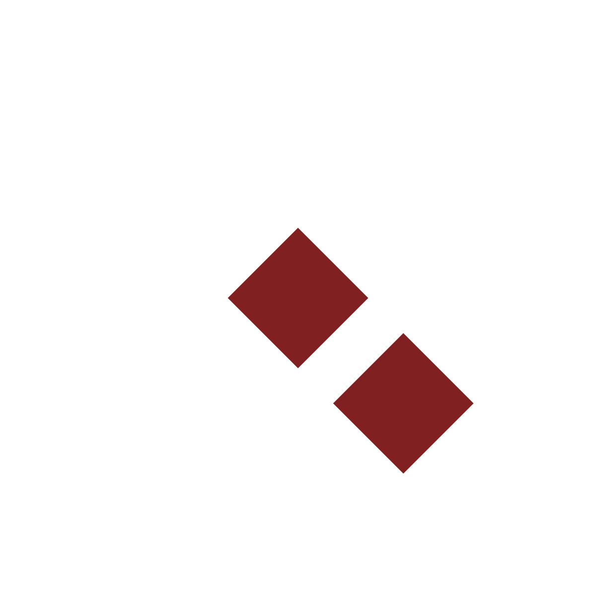
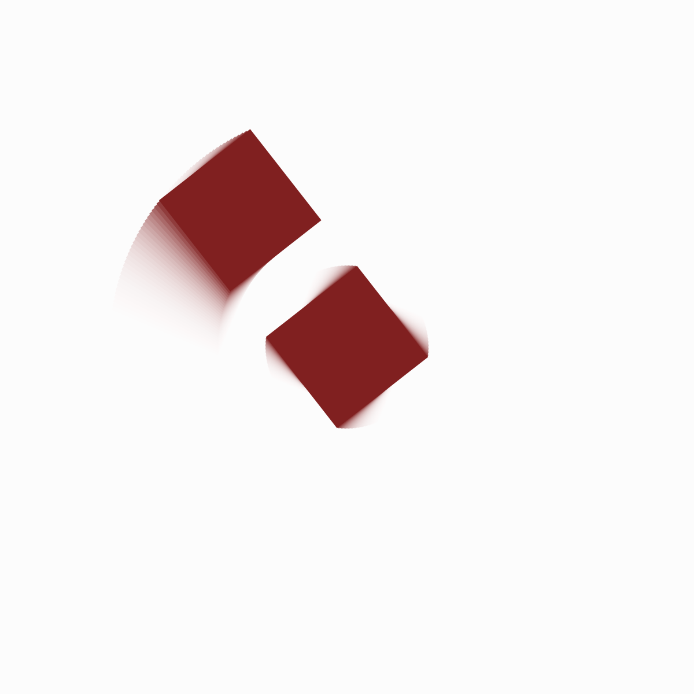
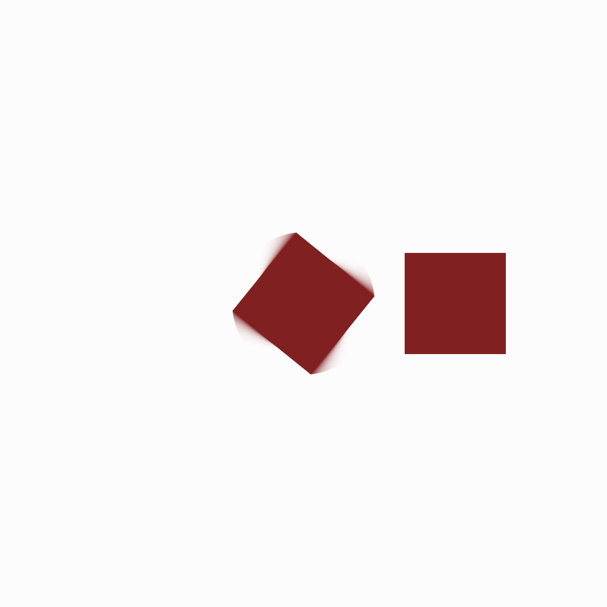
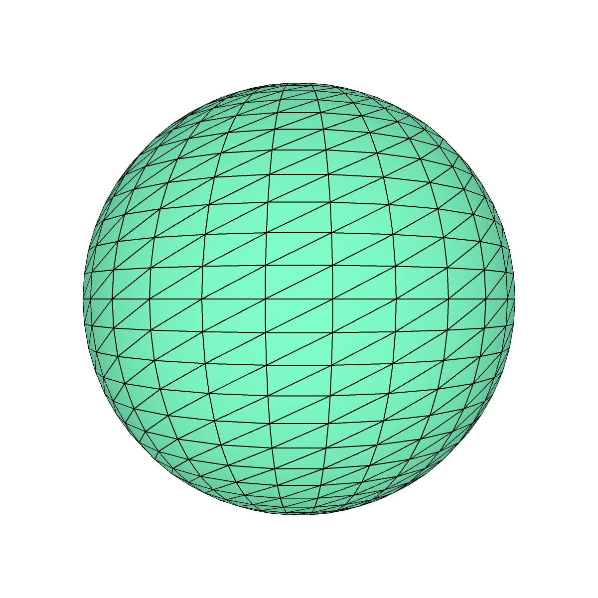
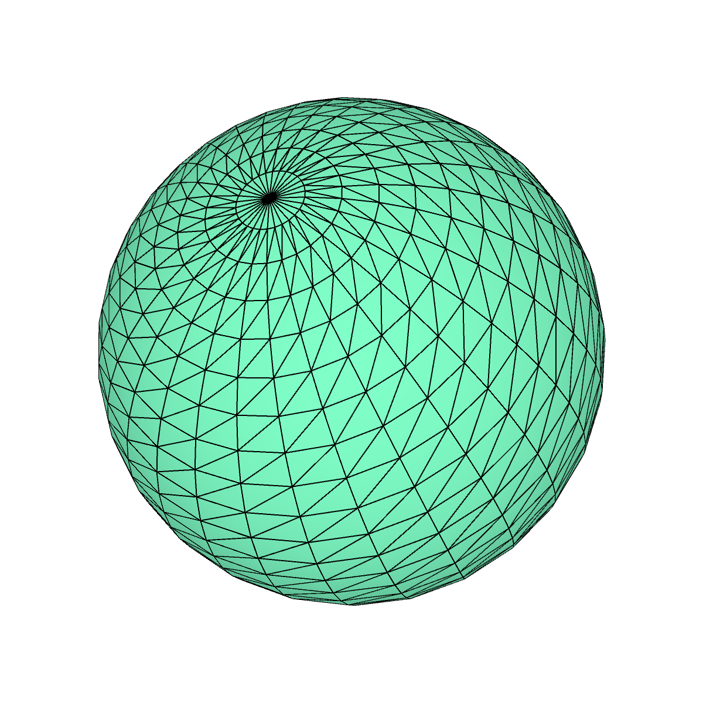
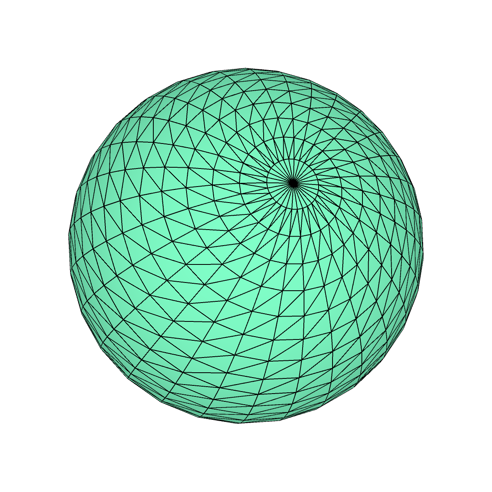
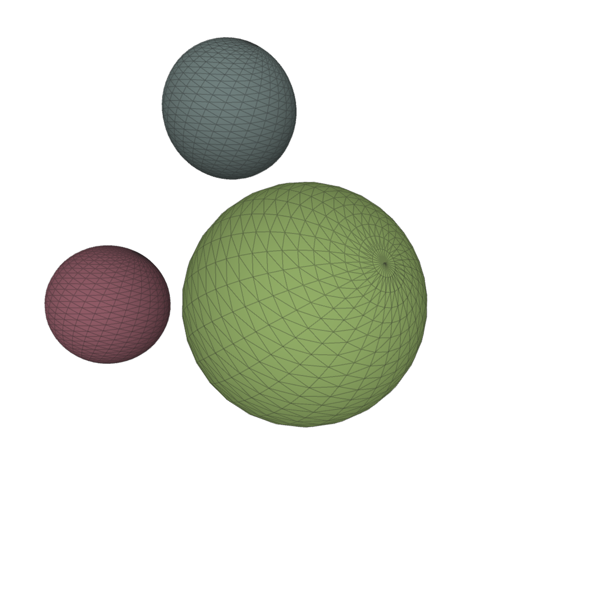
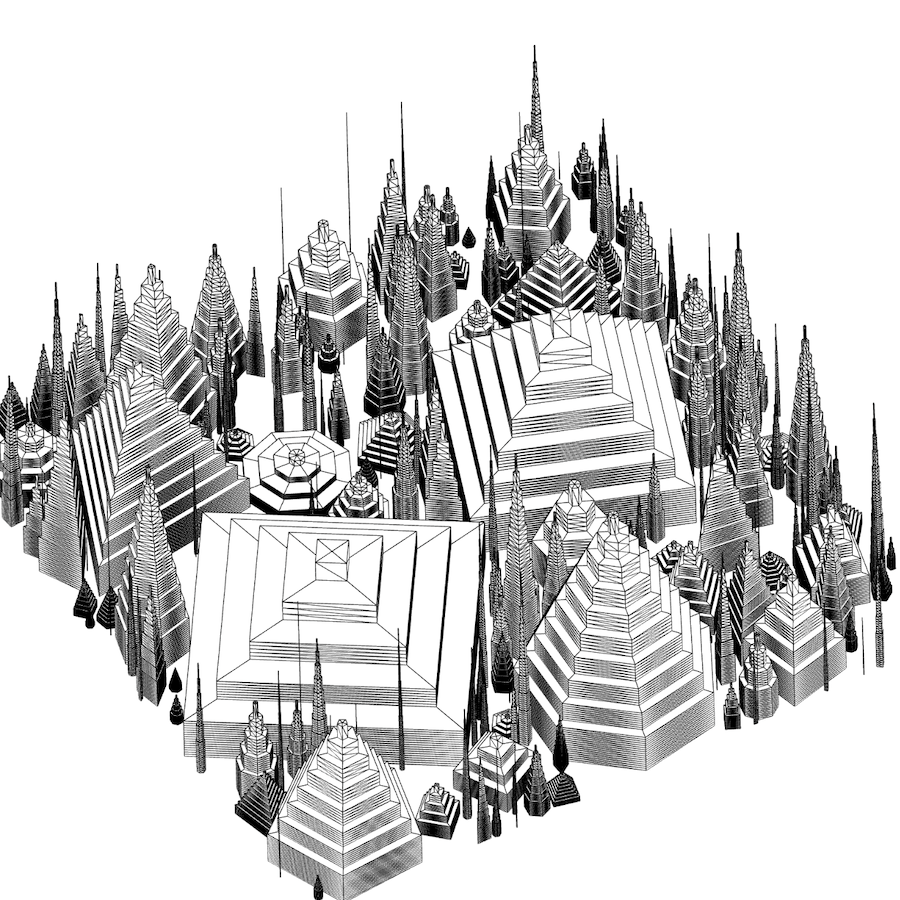

3d Graphics : Challenge / Game
We will run this exercise in class, and so a solution is added for each stage of the challenge / game.
A button like the one shown below will give you a solution.
But please only use this to 'catch-up' if you fall behind. There is no point in the exercise if you don't try to solve the problem yourself at each stage.
The idea is not to get the challenge right, or solve it quickly, btu to learn through trying.
Trying, failing, thinking and falling behind are all important parts of learning. So please only use the 'Catch Up!' buttons containing solutions to catch up!
Try clicking this first one now though!
Click the code to select it, double click to select it all, and use copy and paste to get it into your Processing sketch.
Solution - Catch up Here!
// -- Press these buttons to catch up at each stage.
// -- But you will only learn if you attempt to problem solve for yourself.
// -- Don't be scared of getting things wrong, be scared of not trying things out.
// -- Because trying things out is how you learn, and getting things wrong is inevitable as you do so.
// -- And learning, is why you are here.
// -- And learning to learn is an important part of learning.
// -- So, only click these buttons after you have attempted each challenge!
1. Draw a Square
Update the following Processing sketch to draw a square using the rect() method.
It should be 200 x 200 in size and positioned at the top left of a 600 x 600 canvas.
Colour it in your favourite fill() color().
Your output should look something like the image to the right 👉.
void setup () {
size(600,600);
noStroke();
}
void draw() {
background(255);
fill(128,32,32); // <-- change the colour!
// -- Draw the square here with rect():
}
Solution - Catch up Here!
2. Centre the Square
Without changing the rect() parameters, make the square appear in the centre of the canvas.
Hint: Look up the translate() method in the Processing Reference Documentation.
Solution - Catch up Here!
// -- The hard-coded way:
translate(200,200);
// -- The half hard-coded way:
translate(width/2-100,height/2-100);
// -- The way that is a bit more flexible:
rectMode(CENTER); // <-- this should really go in setup();
translate(width/2, height/2);
// -- Use any of these three ways - just one of them!
3. Shrink the Square
Without changing the rect() parameters, make the square appear smaller on the canvas.
The square should be one quarter of its original size.
Hint: Look up the scale() method in the Processing Reference Documentation.
Solution - Catch up Here!
// -- Add scale() after the translation to scale about the new origin:
scale(0.5);
4. Add a Square
Add a second square of the same size as the original, to the right of the existing square.
Solution - Catch up Here!
// -- Remember - the origin has been moved to the centre of the canvas with translate() :
rect(300,0,200,200);

5. Rotate the Squares
Rotate the squares, 45 degrees clockwise.
Hint: Look up the rotate() method in the Processing Reference Documentation.
Solution - Catch up Here!
// -- Using radians:
rotate(QUARTER_PI);
// -- Using radians in a different way:
rotate(PI/4);
// -- Converting from degrees:
rotate(radians(45));
// -- Use any of these three ways - just one of them!

6. Animate the Squares
Animate the squares, to move in a circle around the centre.
Hint: Use frameCount, which is described in the Processing Reference Documentation, to vary the rotation used when you rotate().
Solution - Catch up Here!
// -- Using radians:
rotate(QUARTER_PI * frameCount/60);
// -- Converting from degrees:
rotate(radians(frameCount * 1));
// -- Something like this should work - try varying the denominator / multiplier!

7. Make only the First Square Rotate
OK, so we want to animate the first square, but not the second square!
Hint: Use pushMatrix and popMatrix, which are described in the Processing Reference Documentation, to vary the coordinate system used in your sketch as it progresses.
Solution - Catch up Here!
// -- Add scale() after the translation to scale about the new origin:
scale(0.5);
pushMatrix(); // <-- save the current coordinate system
// -- Rotate the coordinate system according to frameCount:
rotate(radians(frameCount));
// -- Draw the rectangle here:
rect(0,0,200,200);
popMatrix(); // <-- return to the previous coordinate system (the one we pushed)
// -- This basically removes the rotation before we draw the second rect.
// -- Remember - the origin has been moved to the centre of the canvas with translate() :
rect(300,0,200,200);

8. Draw a Sphere
Let's start a new sketch and draw a sphere.
Look at the Built-in 3D Shapes section of 3D Graphics : Core materials for code that you can use to do so.
Change the colour and perhaps add lights().
Solution - Catch up Here!
void setup () {
size(600,600,P3D); // <-- You will need to use the P3D graphics renderer when defining the canvas
}
void draw() {
background(255);
fill(128,255,200);
translate(width/2, height/2, 0);
lights(); // <-- add some default lighting
sphere(200); // <-- draw a sphere with radius of 200 pixels
}

9. Spin the Sphere
Make the sphere rotate about its centre as the mouse moves left and right.
Hint: Consult the the Processing Reference Documentation on rotateX(), rotateY() and rotateZ().
Solution - Catch up Here!
// -- I use the map() function for this one.
// -- It returns a value between 0 and TWO_PI from an input between 0 and width, and 0 and height
// -- depending upon where the mouse is.
rotateY( map(mouseX, 0,height, 0,TWO_PI) );
rotateX( map(mouseY, 0,width, 0,TWO_PI) );

10. Animate the Sphere
Make the sphere spin continually about its centre.
Solution - Catch up Here!
// -- Perhaps try something like this, before you call sphere()?
rotateX ( radians(frameCount * 0.2) );
rotateY ( radians(frameCount * 1.8) );
rotateZ ( radians(frameCount * 0.6) );
// -- Play with the numbers to see their effects!

11. Animate more Spheres
Add some more spheres and use different transformations and scalings to move them independently.
Use the random() or noise() methods to vary their sizes and colours - just experiment!
Hint: Use pushMatrix and popMatrix, which are described in the Processing Reference Documentation, to help with independent movement.
Solution - Catch up Here!
// -- This is what I cam up with - but try your own ideas: EXPERIMENT!
void setup () {
size(600, 600, P3D); // <-- You will need to use the P3D graphics renderer when defining the canvas
stroke(32, 64);
}
void draw() {
background(255);
lights(); // <-- add some default lighting
// -- Three noise values - structured partly random numbers between 0 and 1 - to add some variation:
float n1 = noise(frameCount*0.0100); // <-- successive numbers are somewhat alike
float n2 = noise(frameCount*0.0050); // <-- successive numbers are more alike
float n3 = noise(frameCount*0.0025); // <-- successive numbers are even more alike
translate(width/2, height/2, 0);
pushMatrix(); // <-- add this coordinate space to the stack
// -- Perhaps try something like this, before you call sphere()?
rotateX ( radians(frameCount * 0.2) );
rotateY ( radians(frameCount * 1.8) );
rotateZ ( radians(frameCount * 0.6) );
// -- Play with the numbers to see their effects!
// -- Use the noise to generate colour components in specified ranges:
fill(map(n2, 0, 1, 64, 255), map(n1, 0, 1, 128, 255), map(n3, 0, 1, 32, 200));
sphere(50+n1*50); // <-- sphere has radius that varies with noise
popMatrix(); // <-- return to the previous coordinate space
pushMatrix();// <-- store it so that we can return back!
rotateY ( radians(frameCount * 0.3) );
rotateZ ( radians(frameCount * 1.2) );
translate(width*0.2, width*0.15);
// -- Perhaps try something like this, before you call the next sphere()?
rotateY ( radians(frameCount * 0.8) );
rotateZ ( radians(frameCount * -0.9) );
// -- Play with the numbers to see their effects!
// -- Use the noise to generate colour components in specified ranges:
fill(map(n3, 0, 1, 64, 255), map(n1, 0, 1, 32, 200), map(n3, 0, 1, 32, 200));
sphere(50); // <-- sphere has radius of 50 pixels
popMatrix(); // <-- return to the previous coordinate space
// -- Perhaps try something like this, before you call the next sphere()?
rotateX( radians(frameCount *-0.9) );
rotateY( radians(frameCount * 1.1) );
rotateZ( radians(frameCount * 3.4) );
translate(width*0.25, width*0.2);
// -- Play with the numbers to see their effects!
// -- Use the noise to generate colour components in specified ranges:
fill(map(n1, 0, 1, 32, 255), map(n2, 0, 1, 32, 255), map(n3, 0, 1, 32, 255));
sphere(50+n2*50); // <-- sphere has radius that varies with noise
}

12. Be Creative!
Impress the people sitting behind you (tough luck back row) by using the sphere() and box() primitives, along with associated transformations, to generate complex and interesting 3D scenes.
Be inspired by examples that you find in the Processing Examples, or at https://openprocessing.org/.
(such as Simon Greenwold's Mixture Grid or kusakari's 0637, which we see to the right.
Try some of the following ...
- Vary the positions and sizes of 3d primitives according to data that you read from file with
loadStrings();
- Use
beginShape() and endShape()to create different geometries;
- Use
texture() to add images to your primitives;
- Experiment with lights to create impressive effects;
... and other things that seem interesting.
Solution - Catch up Here!
// -- No solutions here, but post and discuss ideas and experiments on the discussion boards.
Jason DYKES
15 Nov 2025